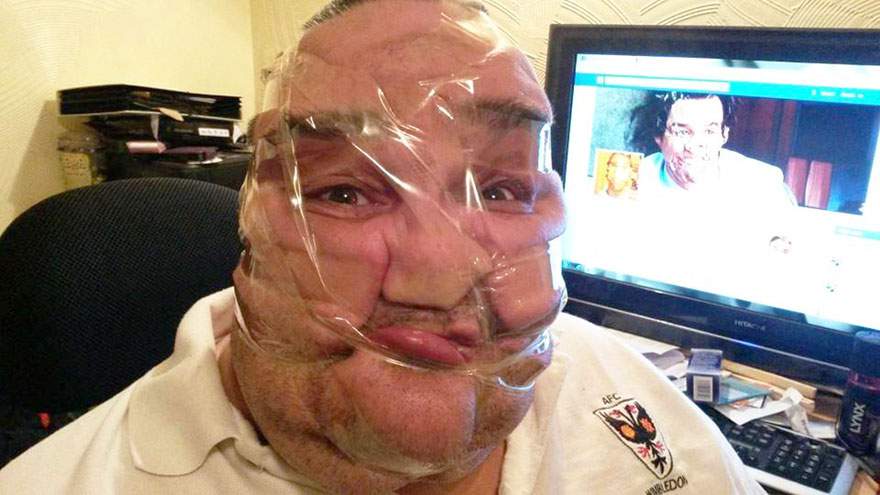
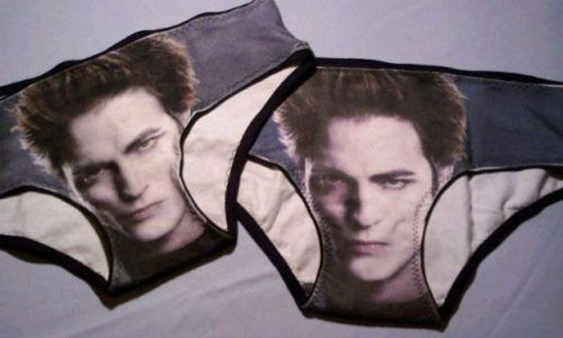

Watery Tiles & Furniture
High Resolution Useless Stuff-WTF Idiotic Product Line
Nosotros somos así

Watery Tiles & Furniture S.L. es una empresa regentada por el archiconocido científico y jugado de polo profesional Mr Hans Tifoidea Matterson III. La sede principal y centro neurálgico de nuestra empresa multinacional está situada en Burriana (Castellón), dotada de aproximadamente 300.000 m² de almacenes industriales, oficinas y mazmorras y cuenta con un stock de más de 2.000.000 m² de producto absurdo que se vende solo por todo el planeta. Esto incluye material porcelánico de dudosa calidad, restos de serie de aparataje de baño de bares de carretera de mediados de los años 70, obras pictóricas únicas desarrolladas en las más prestigiosas instituciones mentales del este de Europa y diseños únicos para confeccionar un hogar único en el que sólo los más osados son capaces de vivir con salud y equilibrio mental.

Nos dedicamos a la venta y distribución de productos y cosas curiosas de importación localizados gracias al sagaz y profesional olfato de una impresionante y amplia red comercial compuesta por Oompa Loompas adictos al opio, científicos ex-nazis, homeópatas licenciados, telepredicadores evangelistas, tesoreros de grupos políticos de dudosa honestidad y tarotistas búlgaras afincados en Torrelodones, todos ellos con un gusto exquisito por lo ajeno y un profundo aprecio por lo extraño. Llevamos trabajando con productos de irrefutable calidad desde hace algo más de un año y gozamos de una enorme aceptación de nuestros productos en el mercado.
En cuanto al ámbito internacional, llevamos 10 años trapicheando en los mercados más oscuros de todo el mundo, especialmente en países como Corea del Norte, Mongolia, Francia, Afganistan, Togo, Kandor y Alquerías del Niño Perdido.
Solo nosotros somos capaces de ofrecerle más de 40 modelos diferentes de servilleteros artesanales somalíes fabricados en china entre otras curiosas cosas de dudoso gusto estético y nula practicidad. Pregunte por ahí si no nos cree. Ande, pregunte, pregunte. También disponemos de una amplia gama de Mamparas de cartulina con incrustaciones de Swarovski, Bañeras de Hidromasaje rotas naturales de países en guerra y ropa interior usada por una amplia red de camioneros turcos. Si quiere obtener nuestros catálogos completos o desea recibir más información acerca de nuestros productos, no dude en contactar con nosotros si se atreve.

Polígono industrial Wicked Cucumber - C/ Camino Old Cucumber nave 62 - CP 42200 - Onda (Castellón)
Tel: 0034 124 333 022 y 0034 964 333 022- Fax: 0034 964 222 223 - contacto: comercial@wtfgroup.com